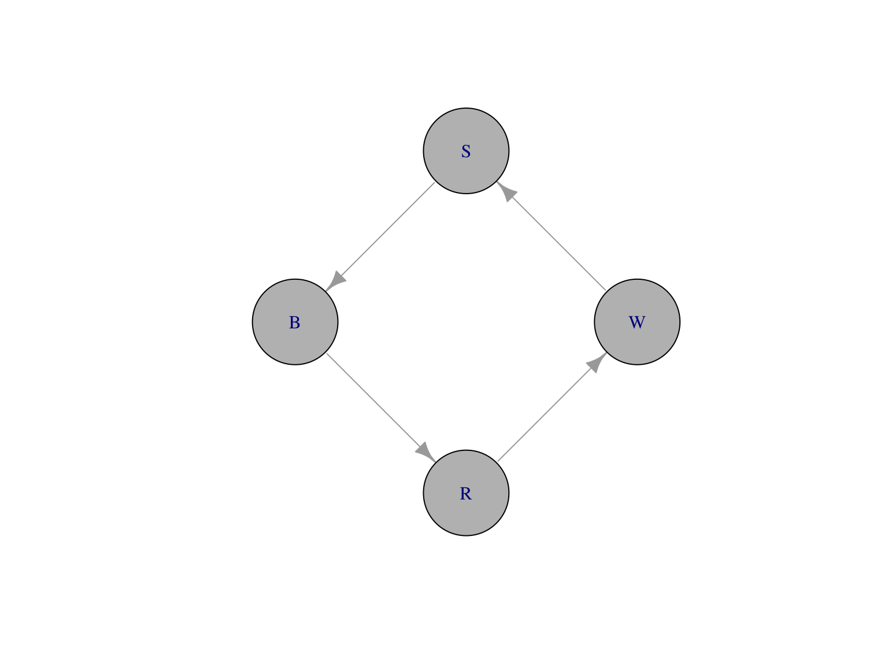
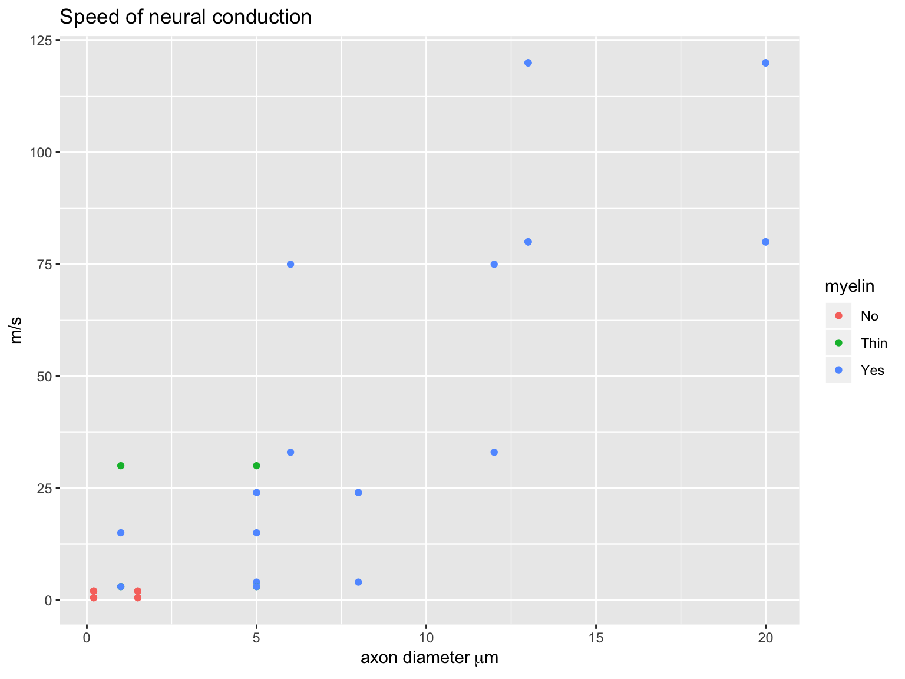

The whole elephant
Preliminaries
Support


Agenda
- \(\Psi >> \Phi\)
- 4 realms
- Duality in description
- The road ahead
\(\Psi >> \Phi\)


But why?

What to do about it?
4 realms and their interactions
| Realm | Domain |
|---|---|
| \(W\) | The world |
| \(B\) | The body |
| \(N\) | The nervous system |
| \(M\) | The mind |
\(M = f(N)\)<> \(N = f(N,B)\)<> \(B = f(B,N,W)\)<> \(W = f(W_{B},W_{\bar{B}},B)\)<>
Nested causality
- Mind within nervous system
- Nervous system within body
- Body within world
Nested causality
- Measure \(W\), \(B\), \(N\)
- \(M\) only via \(N\), \(B\)
\(S\)->\(R\) psychology
- \(S\) (stimulus) -> \(R\) (response)
- \(S\) and \(R\) observable
- \(S\) is the effect of some \(W_i\) on \(B\)
- \(R\) is some change in \(B\)

B.F. Skinner
From \(S\)->\(R\) to \(S\)->\(C\)->\(R\)
- \(S\) (stimulus) -> \(C\) (cognition/computation) -> \(R\) (response)
- \(C\) inferred from structure in \(S\)->\(R\)
- \(C\) elaborate, probably innate, e.g., universal grammar
- Cognitive ‘revolution’
- Cognitive neuroscience (\(C=f(N,M)\))

Noam Chomsky
Circular causality

\(A\) (actions) create \(E\) (effects)
\(E\) (effects) induce \(P\) (perceptions)
\(P\) (perceptions) affect \(C\) (computations/cognitions)
\(C\) (computations/cognitions) affect \(A\) (actions)
Consequences
- \(S\)->\(R\) and \(S\)->\(C\)->\(R\) => linear causality
- Properties of \(W\) downplayed
- Origins of \(C\) attributed to…?
- Why are \(S\) causal and not \(A\)?
- Variability in behavior (\(A\)) only noise

:format(webp)/cdn.vox-cdn.com/uploads/chorus_image/image/46249310/541530203.0.0.jpg)
| known-knowns | known-unknowns |
| unknown-knowns | unknown-unknowns |
| known-knowns | known-unknowns |
| unknown-knowns | unknown-unknowns |
Other symptoms…
In neuroscience


Algorithms vs. Dynamics (Van Gelder, 1995)

By Nicolás Pérez, CC BY-SA 3.0, Link
- Measure the speed of the flywheel.
- Compare the actual speed against the desired speed.
- If there is no discrepancy, return to step 1. Otherwise,
- measure the current steam pressure;
- calculate the desired alteration in steam pressure;
- calculate the necessary throttle valve adjustment.
- Make the throttle valve adjustment.
- Return to step 1.

By R. Routledge - Image from “Discoveries & Inventions of the Nineteenth Century” by R. Routledge, 13th edition, published 1900., Public Domain, Link
What if Marr was wrong?

Biological computing
- Constrained by space, time, energy
- Controls real-time behaviors (ingestion, defense, reproduction)
- Interacts with dynamic environments
Circular causality in nervous system architecture


Whither connectomics
“What we know from C. elegans and the crustacean stomatogastric ganglion, with networks involving very few neurons, is that we haven’t a clue how they work even with the essential addition of electrophysiology. In C. elegans a network of just two neurons can behave quite differently at different times, depending on what modulators are around. So, while SS’s memorable (if pukeworthy) ‘I am more than my genome, I am my connectome’ may be true in a grossly superficial way, they are not going resolve connectional issues in any useful way using their current approaches.”
Looking ahead
Perceptual Control Theory (PCT)

Hierarchies of control
Examples of circular control systems
Image stabilization
- VOR
- OKN
- Pursuit
Postural control
- Righting reflex
- Myotactic reflex
Steering
- \(A\) -> \(W\) -> \(P\)
Visual object tracking
Fruitful lines of inquiry
- Properties of \(W\) and of \(A\)->\(W\)->\(P\)
- Events in \(W\) specified by multiple \(P_i\)
- Topographic maps
- ‘Fourier’-like mappings common
- Accumulating evidence for ‘controlled’ systems (and controlled variables)
Less fruitful lines…
- Behavioral systems less clearly influenced by control
Relation to other ideas
Wrapping up


| Algorithms | Dynamics |
|---|---|
| for x in range(0, n): | \(\dot{x}=f(x,a)\) |

Materials
sessionInfo()## R version 3.5.2 (2018-12-20)
## Platform: x86_64-apple-darwin15.6.0 (64-bit)
## Running under: macOS Mojave 10.14.3
##
## Matrix products: default
## BLAS: /Library/Frameworks/R.framework/Versions/3.5/Resources/lib/libRblas.0.dylib
## LAPACK: /Library/Frameworks/R.framework/Versions/3.5/Resources/lib/libRlapack.dylib
##
## locale:
## [1] en_US.UTF-8/en_US.UTF-8/en_US.UTF-8/C/en_US.UTF-8/en_US.UTF-8
##
## attached base packages:
## [1] stats graphics grDevices utils datasets methods base
##
## other attached packages:
## [1] igraph_1.2.2
##
## loaded via a namespace (and not attached):
## [1] compiler_3.5.2 magrittr_1.5 tools_3.5.2 htmltools_0.3.6
## [5] revealjs_0.9 yaml_2.2.0 Rcpp_1.0.0 stringi_1.3.1
## [9] rmarkdown_1.11 knitr_1.21 stringr_1.4.0 xfun_0.4
## [13] digest_0.6.18 pkgconfig_2.0.2 evaluate_0.13